⚕️ Medical disclaimer: This is a suggested schedule — not medical advice. Review with your doctor or pharmacist, especially if adding berberine (glucose effects) or changing anything near surgery for your kidney stone.
🧬 Methylation Status Guide:
- Undermethylated (MTHFR - methylation +): Low energy, brain fog, depression, high histamine, cold extremities → Take methyl donors
- Overmethylated (MTHFR - methylation -): Anxiety, racing thoughts, insomnia, irritability, rapid heart rate → Take methyl buffers, pause methyl donors
✅ Check off each supplement as you add it to your organizer. Hit Clear All when done to reset for next week.
| ✓ | Supplement | Dose | Timing | With/Without Food | Notes |
|---|---|---|---|---|---|
| ☀️ Morning | |||||
| ☐ | Probiotics (multi-strain) 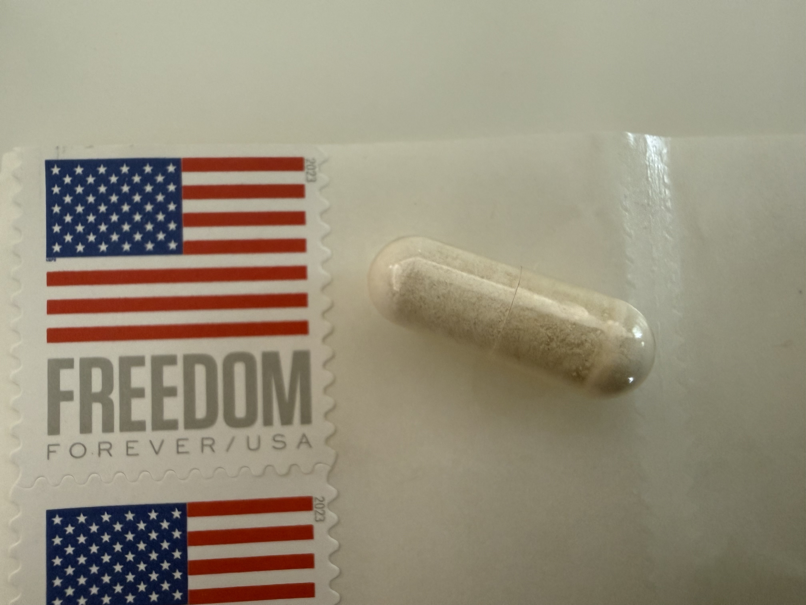 Probiotics (multi-strain) |
per label | Empty stomach | 30 min before breakfast | Celiac · Gut MTHFR
Include L. rhamnosus GG, L. plantarum, S. boulardii. This is added to target some useful microorganisms that the Sugar Shift does not include. The L. rhamnosus GG & L. plantarum: These are fantastic choices for your Celiac / Gut recovery because they strongly support intestinal barrier integrity, reduce inflammation, and help clear oxalates. In terms of methylation, L. plantarum is actually a well-documented folate producer, which means it actively assists your MTHFR pathway. S. boulardii: This is a beneficial yeast, not a bacterium. It doesn't produce folate, but it is excellent for gut lining repair post-antibiotics. It is classified as a baseline MTHFR supplement. |
| ☐ | Methylfolate + Methylcobalamin (5-MTHF / B12) 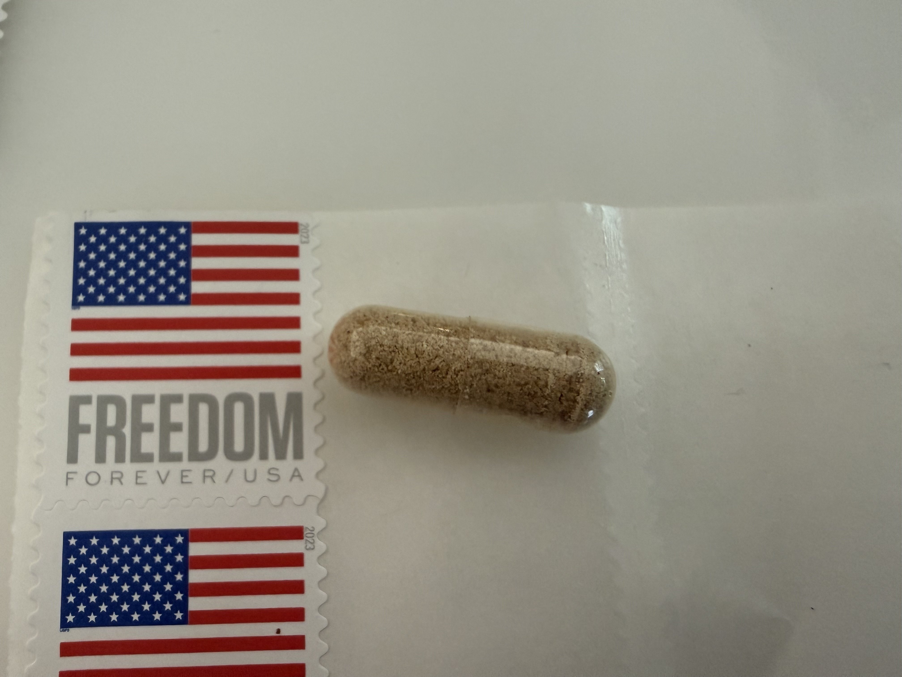 Methylfolate + Methylcobalamin (5-MTHF / B12) |
per label | Morning | Sublingual — no food needed | MTHFR - methylation + APOE4
THIS WOULD BE A RUSH ORDER IF YOU EVER RUN OUT!! PRIMARY METHYL DONOR — addresses undermethylation. Combined capsule. Start low on methylfolate; increase if tolerated. Sublingual bypasses gut absorption issues. ⚠️ PAUSE if overmethylation symptoms appear: anxiety, racing thoughts, insomnia, irritability. Switch to methyl buffers (Glycine, NAC) instead.. While MTHFR dictates how efficiently your body recycles homocysteine, carrying the APOE4 gene makes your brain exponentially more vulnerable to the damage that high homocysteine causes. Be very cautious with assumptions that you have over-methylated and need to cut back on this. |
| ☐ | Riboflavin (B2) Riboflavin (B2) Riboflavin (B2) |
200–400 mg | Morning | With food | MTHFR
MTHFR enzyme cofactor; urine turns bright yellow — normal. This is the direct cofactor that helps your fundamentally altered MTHFR enzyme shape itself and work correctly. It’s a gentle baseline stabilizer, not a heavy push. It is classified as a baseline MTHFR supplement. |
| ☐ | P5P (active B6) 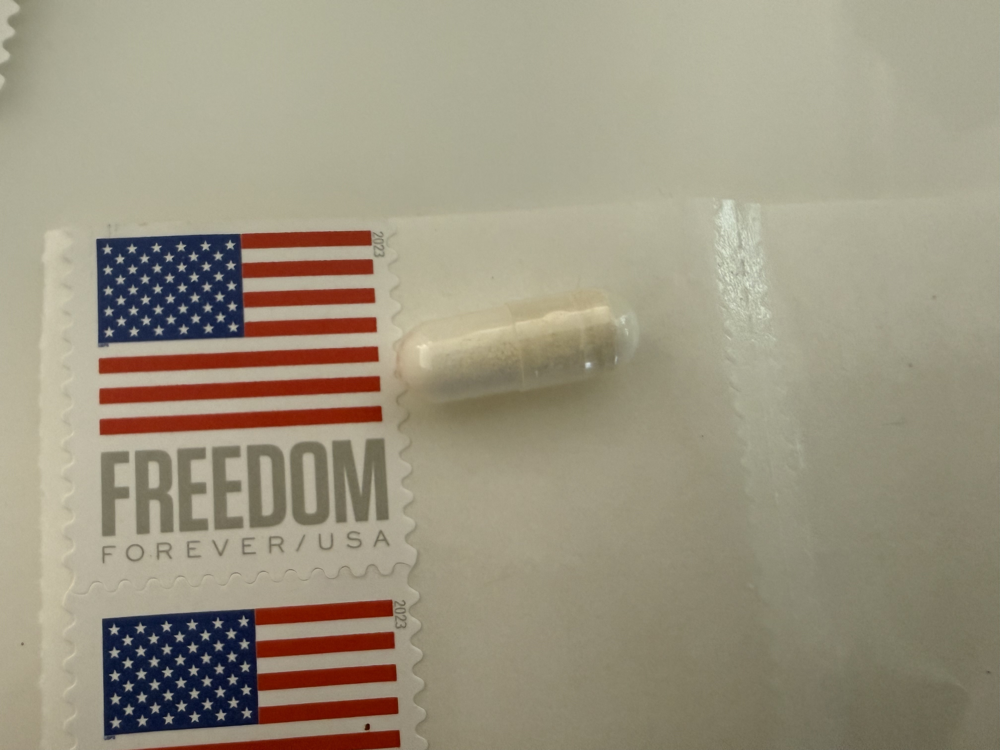 P5P (active B6) |
25–50 mg | Morning | With food | Kidney Stones MTHFR Pre-diabetes
Reduces liver oxalate production. Also a direct AGE inhibitor: the pyridoxamine form (P5P) occupies lysine residues on proteins before glucose can glycate them, and traps reactive carbonyl intermediates (methylglyoxal, glyoxal) before they form AGEs — making this one of the most targeted anti-glycation supplements available. Particularly relevant given MTHFR-impaired glutathione clearance of methylglyoxal. P5P was already in the protocol for oxalate and MTHFR reasons; the anti-AGE effect is a meaningful additional benefit at the same dose. It is not a methyl-donor, nor is it a mop for methyl groups, It powers the transsulfefuration exit ramp to clear out excess homocysteine but it ais also the exit ramp for excess methyl groups (only when in excess). MTHFR impairs parts of the detox pathways in the liver due to impacts on certain vitamins. P5P provides a fix by assuring a steady baseline of glutathione even when active methyl groups are lacking. |
| ☐ | Vitamin D3 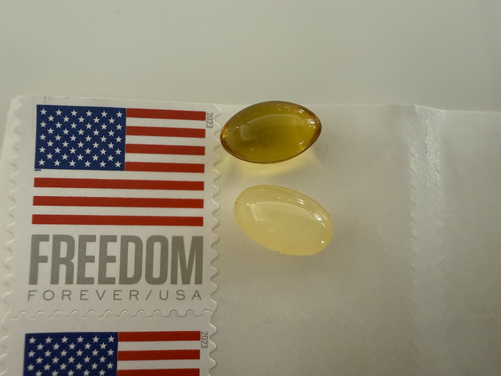 Vitamin D3 |
2000–5000 IU | Morning | With fat (breakfast) | APOE4 Pre-diabetes Celiac · Gut
Test levels; target 50–70 ng/mL. As an APOE4 carrier, your blood vessels are naturally under higher baseline oxidative stress, and you have a structurally elevated risk for endothelial dysfunction (irritation of the blood vessel lining) and cardiovascular plaque build-up. D3 helps to protect those blood vessels - at least it will if you do the necessary pairing with K2 (see the next entry). |
| ☐ | Vitamin K2 (MK-7)Vitamin K2 (MK-7) | 100–200 mcg | Morning | With fat (breakfast) | APOE4
Take with D3; directs calcium to bones not arteries. Taking Vitamin D3 without Vitamin K2 is like ordering a package and not giving the delivery driver an address; the package ends up sitting on the wrong porch. |
| ☐ | Lion's Mane 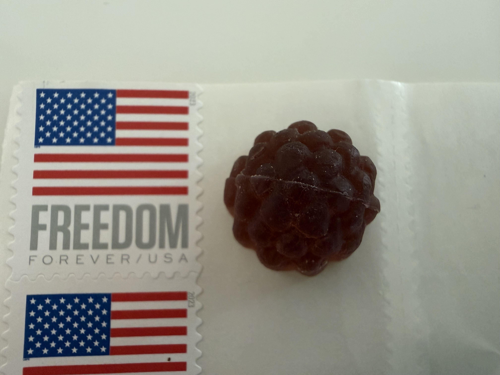 Lion's Mane |
500–1000 mg | Morning | With food | APOE4
BDNF support; APOE4 protocol. This is one of the critical supplements for the brain bioenergetics side of APOE4. It is an important fuel shield and it is also provides insulation from inflammation in the brain that is so often associated with APOE4 (due to leaky blood brain barrier). Consider it a lifetime maintenance supplement. |
| ☕ Food-as-Supplement — Therapeutic Doses of Specific Foods | |||||
| ☐ | MCT Oil | 1 to 2 tsp → 1 tbsp | Between brunch & dinner | In food or drink — do not take on empty stomach alone | APOE4 Pre-diabetes
It can be added to yogurt or kefir in the afternoon close to 3pm when a normal drop in energy tends to occur. It will fend off the sleepiness that happens at that time of the day. Do NOT take it straight on its own or you will get gastrointestinal issues. MCTs bypass normal fat digestion and go straight to the liver, which converts them to ketones within minutes. Those ketones cross the blood-brain barrier immediately and fuel the brain directly. For APOE4 specifically, this addresses a structural deficit: APOE4 impairs the brain's glucose uptake in certain regions (posterior cingulate Cortext & precuneaus - 1st region impacted due to its high glucose demand, medial temporal lobes which holds the hippocampus and amygdala - consolidates short term memories into longterm memories while the amygdala processes emotional responses, posteriotemporal cortex which holds the lateral temporal and parietal lobes - which deals with sensory integration, language comprehension, spatial awareness, and complex cognitive processing), leaving neurons underfueled. Ketones bypass that impaired glucose pathway entirely and feed those same neurons through a different route. Start with 1 tsp and increase over 2 weeks to avoid GI upset — too much too fast causes cramping and loose stools. Build to 1 tbsp over 2 to 3 weeks. The "whooshing" or warm mental clarity sensation some people notice is the ketone conversion happening. |
| ☐ | Turmeric + Black Pepper | ¼–1 tsp turmeric + pinch black pepper | In cooking at any meal — must be with a calcium source | With calcium-containing food (dairy, tofu) | APOE4 Fatty Liver
Curcumin inhibits amyloid-β aggregation and tau phosphorylation (APOE4 neuroprotection) and suppresses neuroinflammation via NF-κB. For fatty liver: multiple RCTs show curcumin reduces ALT/AST, hepatic fat, and inhibits hepatic stellate cell activation (the fibrosis pathway). Black pepper is mandatory: piperine raises curcumin bioavailability by ~2000% by blocking first-pass liver metabolism. Without it, most curcumin is excreted unused. Fat (EVOO, avocado) also improves absorption — golden paste (turmeric + pepper + EVOO) is the ideal base. ⚠️ Moderate-high oxalate (~10–15 mg/tsp): ALWAYS consume with a calcium-containing food at the same meal — calcium binds oxalate in the gut before absorption. Do not take as a standalone capsule away from food. |
| ☐ | Garlic (fresh, crushed) | 2–3 cloves | In cooking at any meal — crush/chop 5 min before heating | In food — low oxalate, use freely | Fatty Liver Pre-diabetes MTHFR
Allicin (formed when garlic is crushed/chopped) activates AMPK via a distinct molecular entry point from ginger and berberine — the three are complementary at a systems level. Sulfur compounds (diallyl disulfide) induce phase II liver detoxification enzymes, particularly glutathione S-transferase, boosting glutathione synthesis. For MTHFR where glutathione recycling is already impaired, this is a meaningful compensatory gain. For fatty liver: allicin inhibits hepatic lipogenesis in human NAFLD trials. For DP: AMPK activation reduces fasting glucose. ⚠️ Preparation is critical: crush or chop first, wait 5 minutes, THEN add to pan. Immediate heat deactivates alliinase (the enzyme that makes allicin). Whole roasted garlic has a different — milder — compound profile. |
| 🍽️ Meal-Associated | |||||
| ☐ | Sunflower Lecithin (Phosphatidylcholine) | 1200 mg | With any meal containing fat | With food | APOE4 MTHFR Fatty Liver
Daily choline source — safer than Alpha GPC for continuous use. Provides phosphatidylcholine directly rather than isolated choline, which means it's absorbed intact and bypasses the gut bacterial conversion to TMA → TMAO that makes supplemental choline risky for APOE4 carriers. Why it helps: Phosphatidylcholine is the primary phospholipid in VLDL particles — the liver's mechanism for packaging and exporting stored fat. APOE4 carriers have impaired phosphatidylcholine metabolism and require more dietary intake. MTHFR reduces PEMT (the enzyme that synthesizes phosphatidylcholine endogenously via methylation), making dietary sources essential. Why sunflower over soy: soy lecithin often contains residual soy proteins that can trigger immune cross-reactivity in celiac/gluten-sensitive individuals; sunflower lecithin is allergen-free and non-GMO. Dose: 1200 mg provides approximately 400 mg of phosphatidylcholine (typical 30–35% PC content in lecithin). Replaces Alpha GPC for daily use — see Alpha GPC note in Conditional section below. Take with breakfast, lunch, or dinner — any meal with fat aids absorption. |
| ☐ | Omega-3 (EPA+DHA) 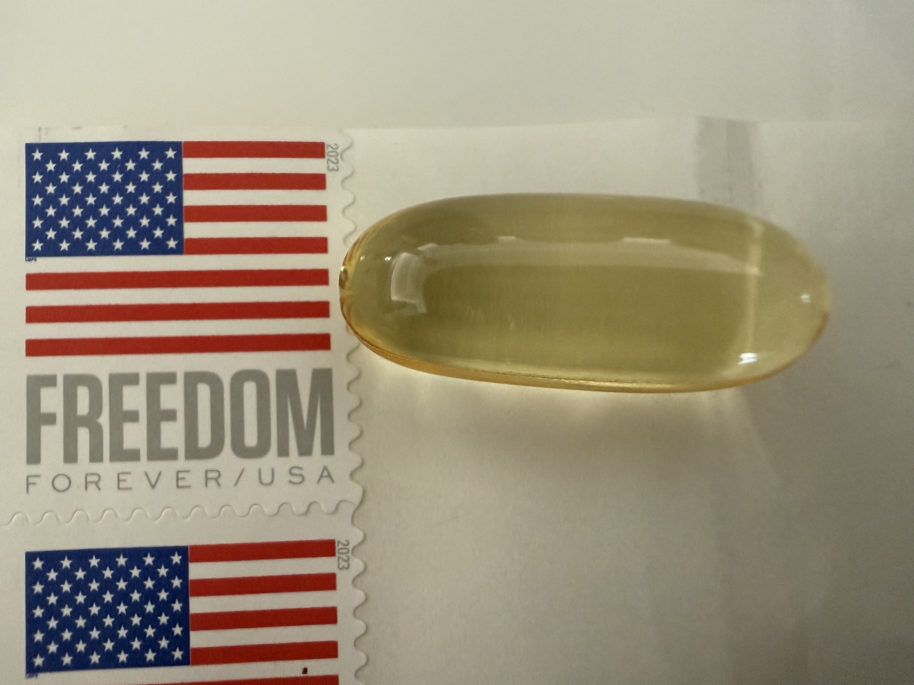 Omega-3 (EPA+DHA) |
2–3 g | With largest meal | With food - very important! | APOE4 Fatty Liver
Critical for APOE4. biochemically, Omega-3s are one of the most high-stakes baseline supplements for an APOE4 carrier, but they come with a major hidden catch regarding dosage and delivery. The brain is the second-fattest organ in the body, and its structure relies heavily on DHA (the primary Omega-3 fatty acid) to build healthy neuron membranes and keep synapses fluid. The Problem: The APOE4 protein fundamentally disrupts how DHA is carried through the bloodstream and across the blood-brain barrier. Studies show that APOE4 carriers actually consume and burn through their brain's DHA supply up to three times faster than those without the gene. The Result: Even if you eat fish, an APOE4 brain is under a constant state of structural "DHA starvation" because the transport mechanics are leaking or inefficient. |
| ☐ | Vitamin C 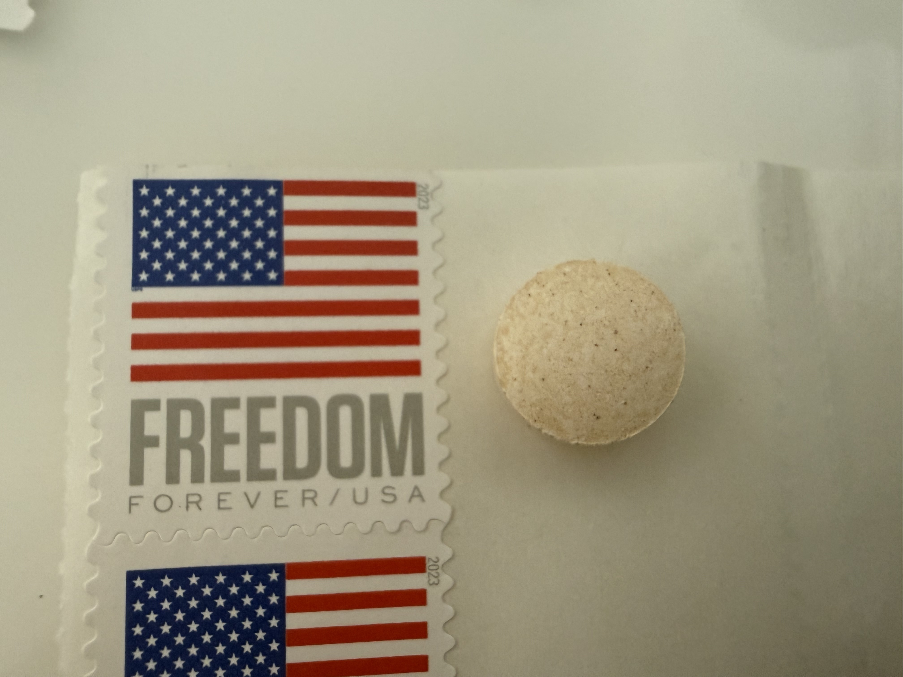 Vitamin C |
≤500 mg | With any meal | With food | Kidney Stones Fatty Liver MTHFR
⚠️ Do NOT exceed 500 mg — metabolizes to oxalate. Vitamin C directly donates electrons to recycle spent glutathione back into its active, protective form. By pairing Vitamin C with the Milk Thistle, a continuous loop of antioxidant defense occurs protecting cells without requiring your body to constantly manufacture brand-new glutathione from scratch. The Glutathione Impact: Because cysteine is the absolute rate-limiting bottleneck for making glutathione, any sluggishness in this pathway leaves your cells structurally short on the raw materials needed to produce it. MTHFR-induced oxidative stress causes your body to burn through its existing glutathione reserves at an accelerated rate, leaving your recycling pathways constantly running behind. your liver aggressively drains its internal glutathione stores. Research shows that hepatic glutathione depletion is a principal driver of NAFLD progression from simple fat accumulation into more severe cellular injury and fibrosis. The liver simply cannot manufacture it fast enough to keep up with the inflammation. |
| ☐ | Milk Thistle — Silymarin 240 mg (Oxyenergy) 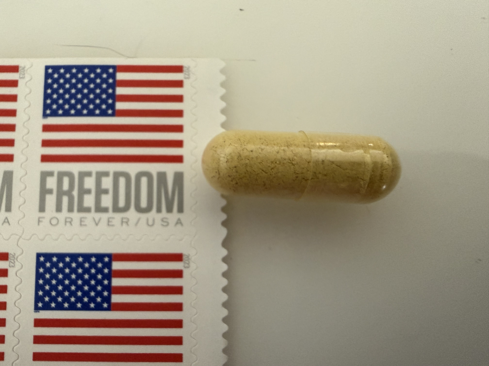 Milk Thistle — Silymarin 240 mg (Oxyenergy) |
1 capsule (240 mg silymarin) | Breakfast + main meal — 2 capsules daily | With food containing fat — egg yolk at breakfast, Omega-3 capsule at main meal (silymarin is fat-soluble; absorption increases substantially with dietary fat) | Fatty Liver MTHFR
Primary hepatoprotective. Silymarin actively regenerates liver cells, reduces hepatic inflammation, inhibits fibrosis progression, and upregulates glutathione production (Phase II detox master antioxidant). Directly relevant to fatty liver recovery. MTHFR synergy: supports Phase II liver detox conjugation which is methylation-dependent — addresses the same methylation-liver pathway as Methylfolate/Methylcobalamin from a different angle. Bonus ingredients in this formula: Inositol (adds to Femositol's insulin signalling support — safe overlap, water-soluble); Vitamin C (Phase II detox cofactor + glutathione regeneration — note total Vitamin C will be higher on days both C supplements are taken); Pueraria (kudzu root — additional hepatoprotective and mild blood sugar support via phytoestrogenic isoflavones). CYP450 note: silymarin mildly inhibits CYP3A4 and CYP2C9 — inform prescribing doctor if ever prescribed statins, certain antibiotics, or blood thinners. Gluten: vegetarian capsules — confirm label "Other Ingredients" for GF status on any new lot. 90 capsules = 45-day supply at 2/day. |
| ☐ | Apple Cider Vinegar (capsule) ACV Capsule ACV Capsule |
1 capsule (2,010mg / 20% acetic acid) | 15–20 min before dinner — take when you start cooking | Capsule form — no tooth enamel risk | Pre-diabetes
Acetic acid inhibits alpha-amylase and alpha-glucosidase (starch-to-glucose enzymes), slowing glucose absorption from dinner and lowering next-morning fasting glucose. Capsule timing: take 15–20 min before eating to allow the capsule to dissolve and acetic acid to be present in the stomach before food arrives — taking it when you start cooking naturally lands in this window. Why capsule over liquid: at 62, enamel protection outweighs any marginal benefit of liquid form — the acetic acid dose is standardized and third-party tested, making capsule form more reliable anyway. Product: Toniiq ACV Capsules — 2,010mg, 20% acetic acid standardized, third-party lab tested. The cayenne addition is a bonus (capsaicin independently improves insulin sensitivity and slows gastric emptying via a separate mechanism). ⚠️ If GI sensitivity to cayenne occurs, take at the start of the meal rather than before it. |
| ☐ | NAC — N-Acetyl Cysteine 600 mg (Pure Encapsulations)NAC — N-Acetyl Cysteine 600 mg (Pure Encapsulations) | 600 mg (1 capsule) | With breakfast — or with main meal if GI-sensitive on empty stomach | With food; small amount of fat fine — glutathione synthesis is not fat-dependent but food reduces nausea risk. ⚠️ Keep 2+ hrs away from Zinc Picolinate (row below) — NAC chelates zinc and reduces absorption if taken together. Breakfast timing naturally separates it from Zinc at dinner. | Fatty Liver MTHFR - methylation - Celiac · Gut
METHYL BUFFER — helps clear excess methyl groups when overmethylated. Primary role: cysteine donor for glutathione (GSH) synthesis — cysteine is the rate-limiting amino acid in the tripeptide γ-Glu-Cys-Gly. Fatty liver: hepatic glutathione depletion is a core driver of NAFLD progression; NAC directly replenishes the liver's primary antioxidant defence. Milk Thistle synergy: silymarin prevents glutathione depletion + regenerates it; NAC provides raw cysteine to synthesise it — two different mechanisms, additive effect on liver glutathione status. L-Glutamine synergy: Glutamine provides the glutamate precursor (the "G" in GSH); NAC provides cysteine (the rate-limiting "C") — both feed directly into the same glutathione molecule. MTHFR / transsulfuration: excess homocysteine exits via the transsulfuration pathway (homocysteine → cystathionine → cysteine → GSH) using B6 as cofactor; NAC augments cysteine availability in this same pathway, reducing homocysteine load from a complementary angle to Methylfolate + Methylcobalamin. When overmethylated: NAC's sulfur groups help buffer and clear excess methyl groups — increase dose or frequency temporarily during overmethylation episodes. Nervous system: modulates glutamate/glutathione balance in the CNS; studied for anxiety, OCD, and neuroinflammation — supports the 3-month nervous system recalibration goal. Insulin resistance: reduces oxidative stress-driven impairment of insulin receptor signalling; modest additive to Berberine + ACV + Femositol stack. Brand notes: Pure Encapsulations is hypoallergenic, certified GF, no unnecessary fillers, third-party tested. Freeform (not bound) NAC has higher bioavailability than some lower-grade products. Hydration note: NAC metabolises partly to cystine; stay well hydrated to prevent urinary concentration (D-Mannose protocol already supports urinary tract health). Flag for prescribing doctor if ever prescribed blood thinners or nitroglycerin-class vasodilators — mild antiplatelet and vasodilatory potentiation. |
| ☐ | Zinc Picolinate 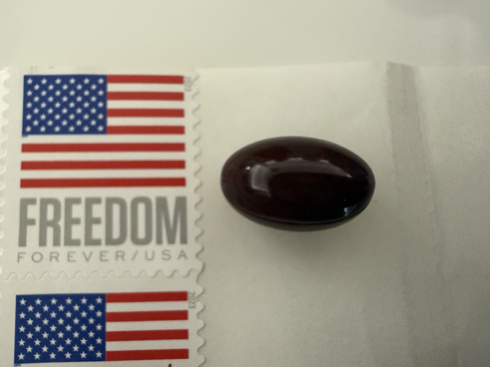 Zinc Picolinate |
15–25 mg | With dinner | With food (reduces nausea) | Celiac · Gut Pre-diabetes MTHFR Fatty Liver APOE4
Take with dinner — 2+ hrs before Magnesium at bedtime. They compete for the same transporter (DMT1); zinc wins and blocks Mg absorption if taken together. Because the compound heterozygous MTHFR variant slows down your primary methylation cycle, your body struggles to produce an optimal supply of glutathione, your master detox antioxidant. This makes your tissues more vulnerable to heavy metal accumulation (like copper) and oxidative stress. Why Zinc Helps: Zinc directly stimulates the production of metallothionein, a specialized protein that binds and safely escorts heavy metals out of the body. Furthermore, zinc is a vital structural component of Superoxide Dismutase (SOD), an antioxidant enzyme that acts as a frontline shield, protecting your cells from oxidative damage before your precious glutathione reserves even have to get involved. For Celiac and fatty liver, the protection comes from its help with repairing the gut lining and making the junctions tight. This reduces inflammation that can occur in the liver and in the brain. |
| 🌙 Evening | |||||
| ☐ | Benfotiamine + Thiamine B1 (Life Extension)Benfotiamine with Thiamin — Life Extension | 1 capsule (80 mg benfotiamine + 25 mg thiamine HCl) | Evening — with dinner or evening snack | With Sugar Shift yogurt — the fat in full-fat A2 yogurt is sufficient for benfotiamine absorption | Pre-diabetes APOE4
This product delivers both forms in one capsule: benfotiamine (fat-soluble prodrug — superior tissue and nerve penetration, directly crosses cell membranes; strongest evidence for AGE reduction and diabetic neuropathy prevention) + thiamine HCl (water-soluble form for systemic repletion). Together they cover both the intracellular and plasma pools. PDH (pyruvate dehydrogenase) cofactor — converts pyruvate → acetyl-CoA, the rate-limiting step of glucose entering the Krebs cycle. Pre-diabetes increases B1 demand because chronically elevated glucose keeps PDH in constant use; studies in T2D populations find circulating B1 75–76% lower than matched controls despite similar dietary intake. AGE relevance: benfotiamine specifically blocks the three major biochemical pathways that generate Advanced Glycation End-products from excess glucose — more relevant than plain thiamine HCl for the insulin resistance / pre-diabetes context. Why evening: morning coffee and tea tannins inhibit thiamine intestinal absorption; evening with a fat-containing meal avoids competition and optimises benfotiamine uptake. B1 is not stimulating — evening timing is fully established. No interactions with any supplement in this protocol. Benfotiamine is not excreted as rapidly as thiamine HCl — tissue levels build over weeks. |
| ☐ | Carnosine (β-alanyl-L-histidine) | 500 mg–1 g | Evening — with dinner or main meal | With food | APOE4 Pre-diabetes Fatty Liver
Carbonyl scavenger: reacts with methylglyoxal and other reactive carbonyls in solution before they reach proteins — acts independently of the glyoxalase pathway, which is directly relevant given MTHFR-impaired glutathione reduces glyoxalase activity. Complements P5P (which blocks glycation at the protein end) via upstream interception — not redundant, different point in the same pathway. Can also perform trans-glycation: pulling glucose off already-glycated proteins (early-stage AGE reversal). APOE4 carriers show lower brain carnosine in research; brain levels decline with age. Chicken/turkey (regular in your diet) are high natural sources — supplement adds coverage on top. Dose note: use 1 g/day to account for carnosinase (CNDP1) plasma degradation before tissue delivery. ♻️ Pairs with evening benfotiamine: benfotiamine blocks the three biochemical glucose-to-AGE pathways; carnosine intercepts reactive carbonyl intermediates in solution — synergistic anti-AGE coverage from two different angles. |
| ☐ | Ceylon Cinnamon | ½–1 tsp or 500–1000 mg capsule | Before bed | Stir into yogurt or take with small snack | Pre-diabetes
Improves insulin sensitivity via GLUT4 transporter activation — blunts overnight hepatic glucose release (Dawn Phenomenon). Must be Ceylon, not Cassia: Cassia contains high coumarin (liver-toxic at daily doses); Ceylon has negligible coumarin. Yogurt + Ceylon cinnamon = protein snack + glucose control in one. Pairs with Femositol bedtime dose for synergistic DP coverage. |
| ☐ | L-Glutamine L-Glutamine L-Glutamine |
5 g | Evening | 20 min away from food | Celiac · Gut MTHFR Fatty Liver
Gut lining repair; celiac recovery. For MTHFR, L-Glutamine acts in perfect metabolic synergy with the morning NAC and evening Glycine to ensure the liver has a flawless supply of raw materials to produce glutathione. Because the MTHFR variant impairs standard cellular cleanup and recycling, your system has a structurally higher demand for glutathione to clear oxidative stress and protect the liver (Fatty Liver). Ammonia Detoxification: When the liver is sluggish or accumulation of fat is present (Fatty Liver), its ability to clear toxic ammonia waste through the normal urea cycle is compromised. The body relies heavily on L-Glutamine synthesis as the primary alternative mechanism to trap and detoxify ammonia in both the liver and the brain. Providing extra glutamine eases this metabolic burden. Reversing Fatty Infiltration: Emerging research demonstrates that L-Glutamine supplementation helps decrease hepatic fat accumulation and reduces the inflammatory signaling that drives non-alcoholic fatty liver progression. |
| ☐ | Goodbye Stress 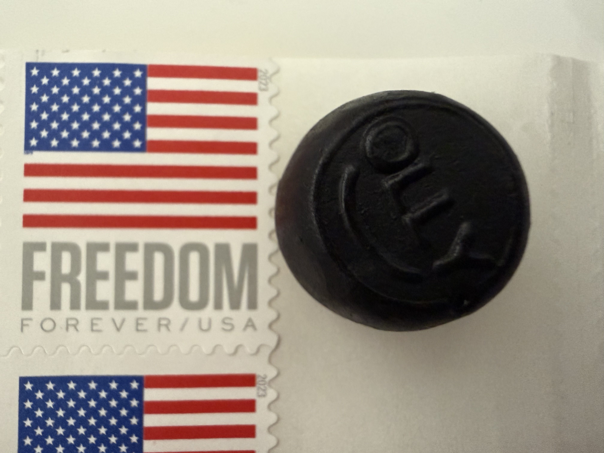 Goodbye Stress (pill or gummy) |
per label | Evening / before bed | With or without food | Pre-diabetes MTHFR
Contains: L-Theanine (promotes calm alertness; raises GABA and serotonin without sedation). this is important with MTHFR because this also blocks the glutamate receptors which tie up the glutamate even more. GABA (inhibitory neurotransmitter; reduces nervous system overactivation). MTHFR's sluggish methylation frequently leads to a build up of glutamate which it has a hard time converting to GABA. By providing GABA, the brain will not have a shortage which otherwise would have led to over-methylation anxiety and racing thoughts.Lemon Balm (mild anxiolytic; supports sleep onset). Together: calming triad for evening wind-down. L-Theanine + GABA is a well-documented combination for reducing pre-sleep cortisol without morning grogginess. Relevant for DP: lowering evening cortisol reduces the cortisol-driven glucose surge in the early morning window. This is available as a pill or a gummy. |
| ☐ | Glycine Glycine Glycine |
3 g | Evening | With or without food | MTHFR - methylation -
PRIMARY METHYL BUFFER — actively clears excess methyl groups when overmethylated. Homocysteine sits at a crossroads. It can either be recycled back into methyl groups, or it can be pushed down the transsulfuration pathway to create cysteine, which your body uses as the primary building block to manufacture glutathione (your master antioxidant). If your primary methylation cycle is sluggish or blocked, your body struggles to feed this secondary pathway, crashing your glutathione production and slowing down cellular detox. When your body has more methyl groups than it can handle (often caused by over-supplementing with heavy methyl donors), it triggers symptoms like acute anxiety, panic, insomnia, or rapid heart rate. To stop this nervous system overload, your body relies on a "methyl buffer system" to act like a sponge and mop up the excess. Glycine is the primary amino acid used in this buffering pathway — it conjugates with excess methyl groups and safely carries them out via urine. During overmethylation episodes: increase dose to 5–6 g split morning + evening until symptoms resolve. Pairs with NAC (another methyl buffer) for synergistic clearing. |
| ⚠️ Conditional / Situational — Not Daily | |||||
| ☐ | Berberine 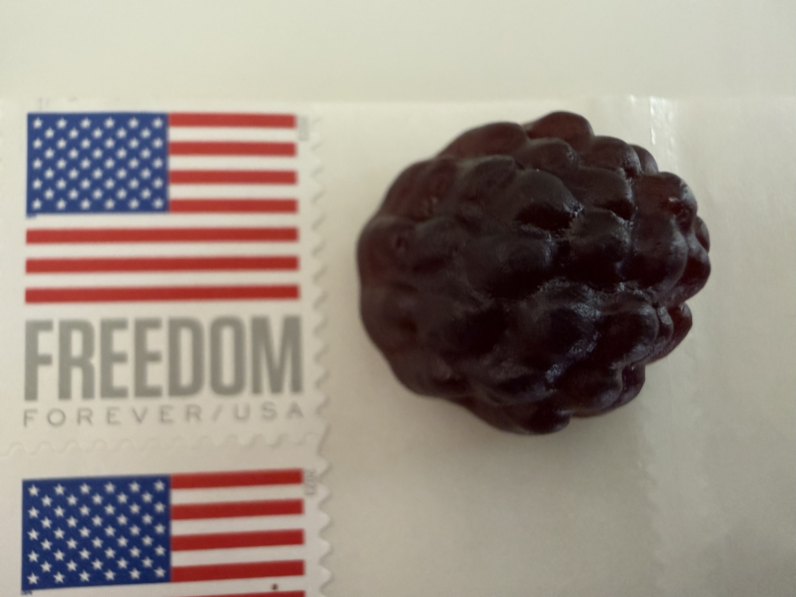 Berberine |
500 mg | With dinner | With meal | Pre-diabetes Fatty Liver
UPDATED: Pre-diabetes was likely an illusion caused from very densely packed hemoglobin in red blood cells combined with longevity of those cells due to sluggish red blood cell production in the bone marrow due to MTHFR. So, this supplement has been moved to conditional to hang on to it in case I am wrong. END OF UPDATE. While you already use Black Coffee and Ginger to promote fat burning in liver cells, Berberine targets the structural root of fat deposition from a completely different molecular angle: The Mechanism: Berberine directly inhibits a protein transcription factor called SREBP-1c. This protein is the master regulator that tells your liver to create new fat molecules from circulating sugars (lipogenesis). By shutting down this signal, berberine prevents your liver from packing away new fat, while its independent activation of AMPK forces the liver to burn its existing fat stores for energy. Multiple clinical trials demonstrate that berberine significantly drops hepatic fat content and normalizes liver enzymes (ALT/AST).It also up-regulates insulin receptors throughout the body. It also has an impact on the gut biome by shifting the micro-organisms away from inflammatory species. ⚠️ Do not combine with metformin. Check with doctor. ♻️ Cycling recommended: 8–12 weeks on, 2–4 weeks off. Part of berberine's effect is mediated through gut cell GLP-1 secretion — the same pathway as GLP-1 agonist drugs. Gut cell adaptation can gradually blunt this component over continuous use. Current plan: run continuously through the 12-week exercise window (Jun 5–Aug 27), then take a 2–4 week break in September before resuming. |
| ☐ | Femositol — Myo-Inositol + D-Chiro-Inositol (Tier Therapeutics) 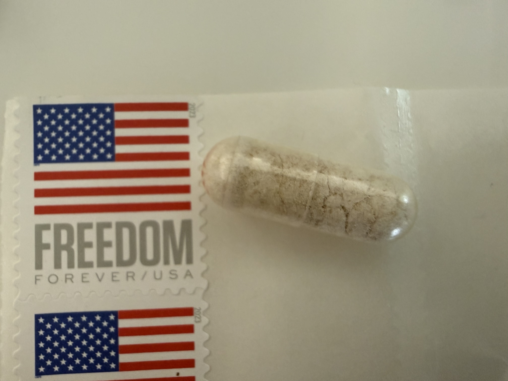 Femositol (Tier Therapeutics) |
per label (typically 2–4g myo / 40:1 ratio) | Split: morning + evening/bedtime | With food | Pre-diabetes
UPDATED: Pre-diabetes was likely an illusion caused from very densely packed hemoglobin in red blood cells combined with longevity of those cells due to sluggish red blood cell production in the bone marrow due to MTHFR. So, this supplement has been moved to conditional to hang on to it in case I am wrong. END OF UPDATE. Insulin second messenger support — restores intracellular insulin signaling so cells respond to insulin that's already present rather than needing more. Directly addresses Dawn Phenomenon by improving the liver's response to insulin's overnight "stop releasing glucose" signal. Works via a completely different pathway than Berberine (AMPK) — genuinely complementary, not redundant. The bedtime dose is the most relevant for DP. 40:1 myo:D-chiro ratio mirrors physiological tissue ratio. |
| ☐ | Ginger (fresh / ginger bug liquid) | 1–2 tsp fresh grated or 2–4 tbsp bug liquid in cooking | In cooking at any meal; bug liquid as cooking splash | In food — not a separate supplement | Fatty Liver Pre-diabetes
UPDATE: Since pre-diabetes and fatty liver are dropped out of an active medical intervention tasks, just test this during the next CGM cycle to see how I do with it in a ginger bug based beverage. If I crash out with a low I can modify tome of the variables with this as a beverage. END OF UPDATE. Gingerols activate AMPK — the same cellular energy pathway targeted by berberine — suppressing hepatic glucose output and promoting fat oxidation inside hepatocytes. This makes ginger directly relevant to both fatty liver and Dawn Phenomenon via a complementary (not redundant) pathway to berberine. Anti-inflammatory: gingerols and shogaols inhibit TNF-α, IL-6, and NF-κB — the same inflammatory signals that worsen insulin receptor signalling in the liver. Prokinetic: ginger regulates gastric emptying, smoothing the glucose absorption curve and reducing post-meal spikes. Fresh vs fermented (ginger bug): fermentation converts some gingerols to shogaols (more potent anti-inflammatory) and adds live Lactobacillus (microbiome/GLP-1 signalling) — the fermented form is slightly more beneficial overall. Ginger bug used as cooking liquid (splashed into grain cooking water, stirred into marinades, added to soups) delivers the therapeutic benefit without residual sugar concern. Ginger beer/ale from the bug: run a food response test before drinking regularly — fermentation time determines how much residual sugar remains. ⚠️ At culinary doses (not supplement doses) no significant drug interactions. At high supplement doses (>4g/day) may mildly potentiate blood thinners — not relevant at cooking amounts. |
| ☐ | Ceylon Cinnamon | ½–1 tsp | Bedtime (in yogurt or A2 milk) and/or with meals | In food — not separate | Pre-diabetes Fatty Liver
UPDATED: Pre-diabetes was likely an illusion caused from very densely packed hemoglobin in red blood cells combined with longevity of those cells due to sluggish red blood cell production in the bone marrow due to MTHFR. So, this supplement has been moved to conditional to hang on to it in case I am wrong. END OF UPDATE. GLUT4 transporter activation improves insulin sensitivity via a completely different pathway from ginger (AMPK) and berberine (AMPK) — making it genuinely additive. Multiple RCTs show fasting glucose reductions of 10–29% with consistent use. For fatty liver: cinnamon reduces hepatic triglyceride accumulation and improves hepatocyte insulin signalling. The bedtime dose is the highest-value timing for DP — ½–1 tsp stirred into yogurt before bed blunts the overnight hepatic glucose release during the exact DP window. ⚠️ MUST be Ceylon cinnamon (Sri Lanka label). Cassia cinnamon (generic grocery store "cinnamon") contains high coumarin which is directly liver-toxic at daily doses. Do not substitute. |
| ☐ | Magnesium Citrate 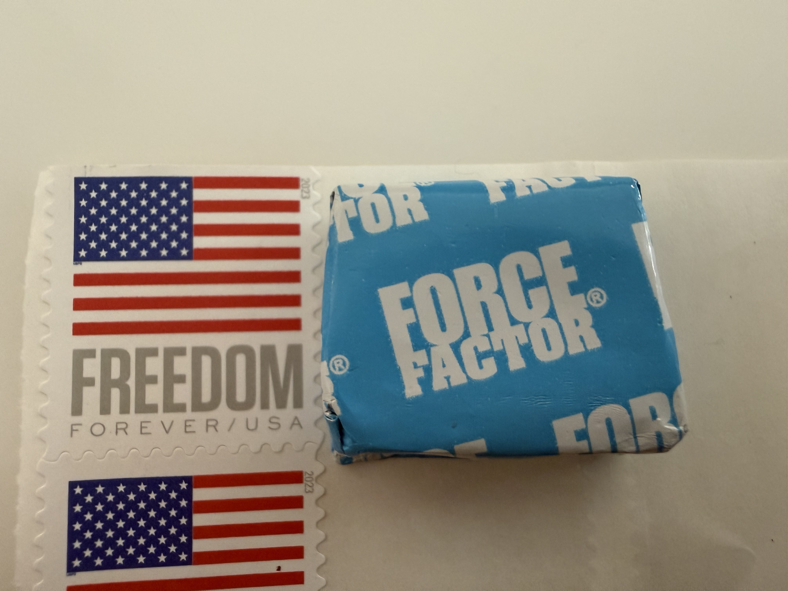 Magnesium Citrate |
200–400 mg | Bedtime | With or without food | Kidney Stones Pre-diabetes
UPDATE: The kidney stone and pre-diabetes are downgraded in concern, so it has been moved to the Conditional section. END OF UPDATE. Stone prevention + sleep quality + glucose. Take at bedtime — 2+ hrs after Zinc at dinner |
| ☐ | D-Mannose Powder 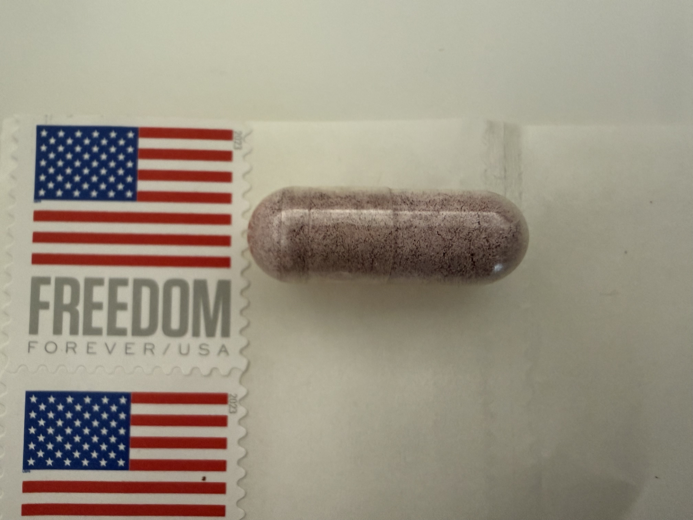 D-Mannose Powder |
2 g | Only if E. coli UTI | In water, between meals | UTI
⚠️ Does NOT work for Klebsiella (your Dec 2025 strain). Use only for E. coli UTI. Prevention: 2g/day. Acute: 2g every 3 hrs for 3 days then 2g/day for 4 weeks. Zero oxalate — safe for kidney stones. |
| ☐ | Oil of Oregano | per label | Only if Klebsiella flare suspected/confirmed | With food (reduces GI irritation) | UTI
⚠️ Broad-spectrum antimicrobial — kills beneficial bacteria too. Do NOT use daily or alongside active probiotic rebuilding. Use only for suspected/confirmed Klebsiella flare while waiting for culture, or as adjunct to medical treatment. 7–14 days max then stop. Active compounds: carvacrol + thymol — effective against Klebsiella pneumoniae. ♻️ Cycling is mandatory, not optional: carvacrol and thymol continuously suppress beneficial gut flora alongside pathogens. Even outside of active flares, if ever used for general antimicrobial support: 2–4 weeks on, 2–4 weeks off minimum. Microbiome recovery requires the break — the beneficial effect diminishes and the disruption accumulates without it. |
| ☐ | Chanca Piedra 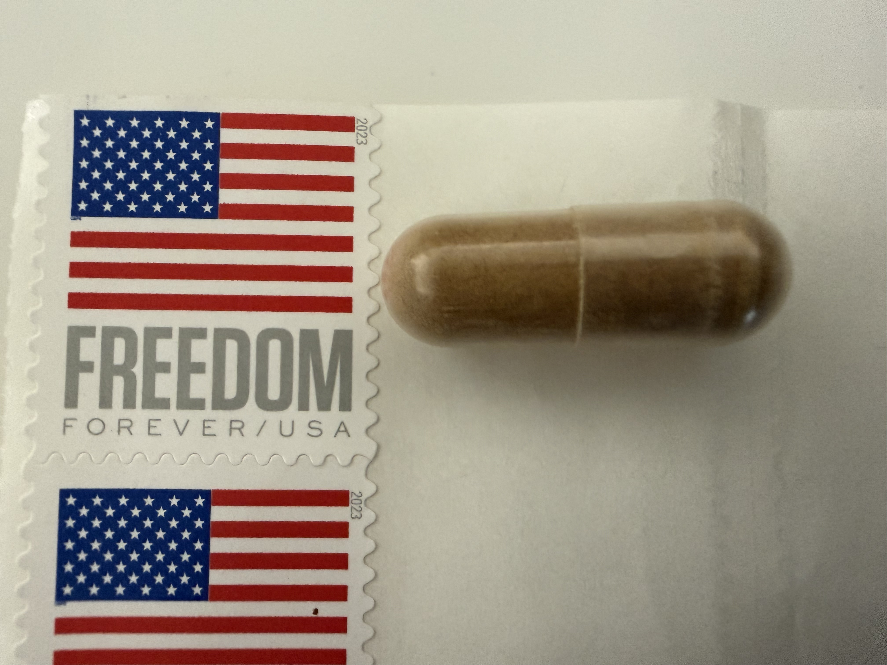 Chanca Piedra |
per label | Active stone episode or pre-procedure | Away from food, between meals | Kidney Stones
⚠️ Short-term use only — not a daily supplement. Use during an active kidney stone episode, or in a targeted short course before a planned stone procedure. Supports stone dissolution and urinary oxalate/calcium excretion. Discontinue after 4–6 weeks and reassess with your urologist. ♻️ Course-based by design: 4–6 week course, then off until the next episode or pre-procedure window. This is not a supplement that builds a long-term effect with continuous use — it is an acute intervention. There is no benefit to taking it between stone episodes; break periods are the default state. |
| ☐ | Alpha GPC (Choline) | 150 mg | Morning | With food (fat-containing meal) | APOE4 MTHFR Fatty Liver
⚠️ REPLACED BY SUNFLOWER LECITHIN — see Meal-Associated section above. Sunflower lecithin (phosphatidylcholine) can be taken daily without TMAO risk and is now the preferred daily choline source. Alpha GPC remains an option only for rare circumstances when both eggs AND sunflower lecithin have been absent for 2+ days. 🥚 Original purpose: Conditional choline backup — was intended as a safety net for egg shortfalls before grocery day. This supplement is not for daily use; eggs + sunflower lecithin are the preferred choline sources. Why it helps: Choline is required for phosphatidylcholine synthesis and VLDL assembly — the liver's mechanism for packaging and exporting stored fat. Without adequate choline, fat accumulates in hepatocytes rather than being exported, directly worsening fatty liver. APOE4 carriers have impaired phosphatidylcholine metabolism and likely higher choline requirements than the general population. MTHFR reduces PEMT (phosphatidylethanolamine N-methyltransferase) pathway activity — the route by which the body synthesises choline endogenously — meaning dietary choline cannot always be compensated internally when methylation is impaired. Alpha GPC is the most bioavailable choline form and crosses the blood-brain barrier, where it supports acetylcholine signalling — directly relevant to APOE4's elevated cognitive risk profile. Why 150 mg and not more: ⚠️ High choline intake is converted by gut bacteria to TMA (trimethylamine), which the liver oxidises to TMAO (trimethylamine N-oxide) — a pro-atherogenic compound that promotes vascular plaque formation and arterial inflammation. APOE4 carriers already carry elevated cardiovascular risk, making high TMAO specifically more dangerous for this genotype than for the general population. Supplemental choline raises TMAO more than food-source choline at equivalent doses. 150 mg is a conservative safety-net dose that provides meaningful choline support without triggering the TMAO risk seen at higher supplemental doses (300–600 mg, such as in standard Alpha GPC products). Now that sunflower lecithin is in the daily protocol, this is rarely needed. |
| ☐ | Betaine (TMG)Betaine (TMG) | 500 mg start | With dinner or main meal | With food | MTHFR - methylation +
🔄 Conditional: only take during confirmed undermethylation periods — when experiencing low energy, brain fog, depression, high histamine, or cold extremities. This is a BACKUP METHYL DONOR that addresses undermethylation via an alternative pathway to methylfolate. ⚠️ Not for continuous daily use. Excess methylation can trigger mood disruption (anxiety, irritability, or depressive rebound) in ~10–20% of people — risk is higher with a history of stress-related depression. Start at 500 mg and monitor mood closely via Health Tracker. Taking with dinner spaces it from morning methylfolate + methylcobalamin to avoid methyl stacking. IF OVERMETHYLATION SYMPTOMS APPEAR (anxiety, racing thoughts, insomnia, irritability) — STOP IMMEDIATELY and switch to methyl buffers (Glycine, NAC) instead. ♻️ Cycling is mandatory: 8–12 weeks on maximum, then 2–4 weeks off. Monitor mood via the Health Tracker slider — drop to 2 or below on consecutive days, or new/worsening anxiety or irritability = pause immediately. This is not a long-term daily supplement — it's a short-term intervention for undermethylation episodes. |